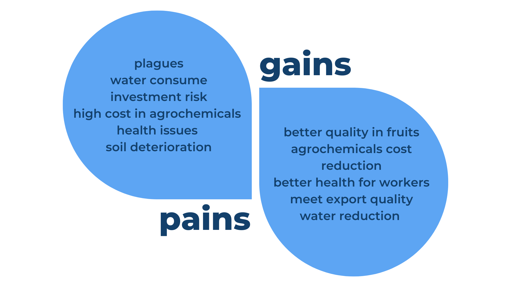
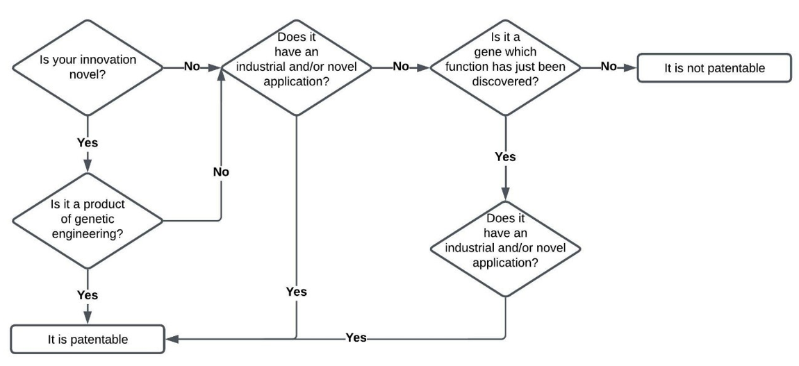
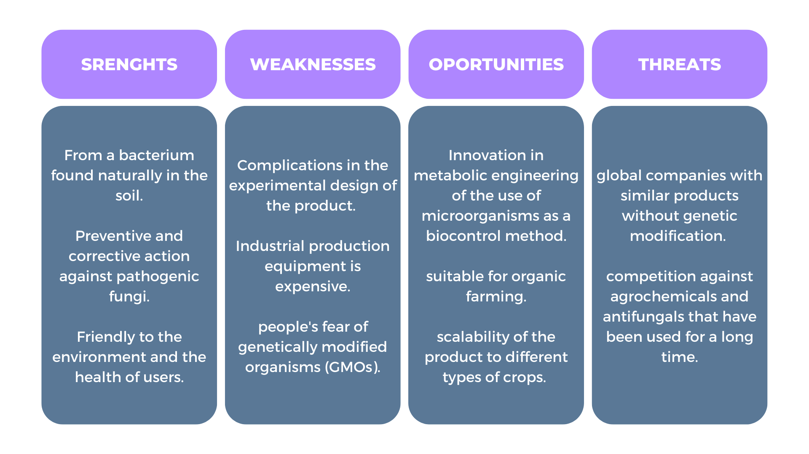
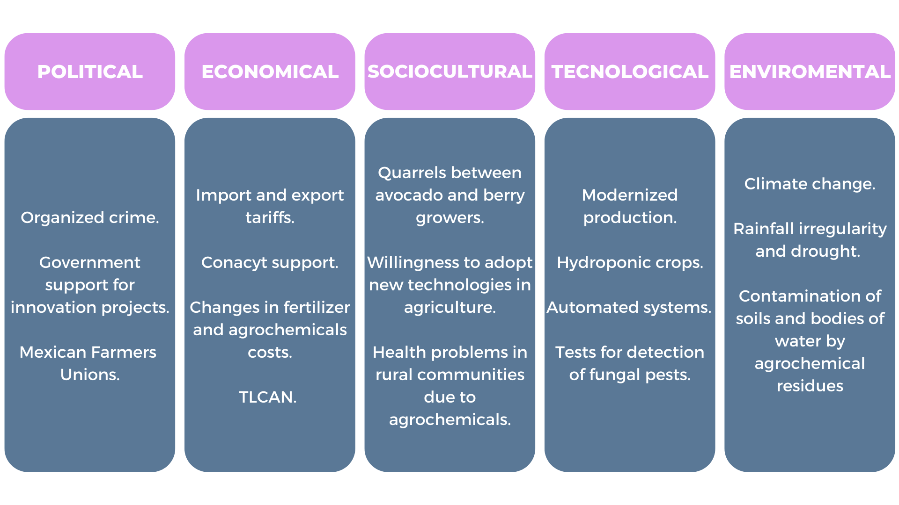
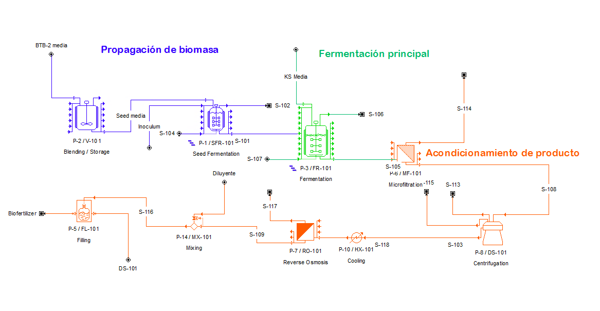

Proposed Project Implementation of BerryVax
PROBLEM IDENTIFICATION
For the selection of our problem, we first searched for the current needs that exist in our country, more specifically in our state, by consulting the State Innovation Agenda (Agenda Estatal de Innovación, AEI) from Jalisco, a tool for state and regional economic development, to define and articulate priorities, generate intelligent solutions and leverage support for high-impact projects.
Each member of the team conducted exhaustive research about a topic of their interest, seeing the impact of each of these problems, and possible solutions through synthetic biology, a vote was held among the team members, to arrive together at a topic of interest, which we saw an incredible potential as a project.
For a deeper identification of the problem and the design of the best possible solution, the Design Thinking methodology was used, which includes 5 steps:

This strategy is ideal for the general understanding of the problem based on the needs of a potential customer segment, as well as the validation of the solution that is intended to be generated through various activities implemented in the area of human practices in this project. For more information visit our Human Practices page. (LINK A HUMAN PRACTICES). We also got some professional advice in the development of the business model, in order to reach a complete and adequate business plan for the product to be generated. perro puto link aqui
MISION
Through the advice of experts in pest control in berry crops, conversations with small and medium-sized producers, as well as export companies of these products, we seek to generate an integral strategy of biocontrol of fungal pests in berries, always considering the needs for the integrity of workers and laborers, without harming the environment.
VISION
To generate a product capable of preventive and corrective control of fungal pests affecting berry crops.
VALUE PROPOSITION
To conclude with our value proposition, we carried out a fundamental process of the Design Thinking method, empathizing with the affected parties to understand how the problem affects them, and clearly understand what we are solving, for which we use the Empathy Map tool, where we try to see the situation from the perspective of those affected, through a series of questions such as: What do they feel? What do they see around them? What do they hear about this issue? and What solutions do they currently implement??

From this Empathy Map diagram, we could more easily perceive the need for a comprehensive, natural and organic solution to the losses that farmers are currently experiencing, without involving the health of workers, as well as the early detection of these threats in order to be able to treat them adequately.
From this we can solve losses due to pests, pest detection efforts, stimulate the immune system and plant production, reduce costs by attacking multiple pests with a genetic circuit, reduce water expenses, reduce plant losses and increase fruit quantity, from which our value proposition is born and finally structured.
To produce higher quality fruit, reducing fruit loss and the loss of plants due to fungal pests through an integral control, both preventive and corrective and organic, while providing security to the agricultural community, avoiding health problems to the rural community and welfare to consumers for a future sustainable field.

INTELLECTUAL PROPERTY
Strategy Design The following process will be applied when patenting BerryVax. The general purpose of a patent is to grant an exclusive right of use over an invention. The issue of gene patents is still complicated and raises many different opinions regarding the ethical aspect. To date, it is impossible to patent a gene by itself. However, a genetically modified organism with industrial application can be patented. Depending on your country, the process varies. This section focuses on countries governed by the Budapest Treaty. This treaty was established in 1977 and states that once the patent procedure has been completed and the microorganism has been deposited in a repository, the patent is valid in all the countries that belong to the treaty. There are currently 81 members, available here.
The first step is to check if your invention is patentable:
From this point on, the process is specific to Mexican authorities. If you are from another country, you must check the next steps to patent a microorganism with your local authorities. The present guide can serve as a general idea of the procedure for other IGEM teams interested in patenting their products or solutions.
Next, you must check here and here if your microorganism fulfills the requirements stablished by the Budapest Treaty for IDA’s (International Depositary Authorities). Once you have met those requirements, the process to follow is:

It is important to note that the patent of a microorganism falls into the category of industrial property, the following costs correspond to this process and category. There are additional fees that must be covered with the WIPO and the Budapest Treaty, as well as with the institution in which you deposit your microorganism. These fees depend on the country in which you are carrying out the process. The following table breaks down the fees that must be covered with the IMPI when requesting a patent.

SWOT ANALYSIS
PEST ANALYSIS
MARKET ANALYSIS
The berry sector in Mexico ranks 3rd in the importance of agri-food exports, with annual sales of around $2,282 MDD in 2020. Internationally, Mexico contributes 10.2% of the berries consumed in the world.
On the World rank Mexico is:

Based on data provided by the National Association of Berries Exporters (Aneberries), blueberry production grew by around 112% in 2021. The export of berries in Mexico is valued at 400 MDD, exporting 364 thousand tons around the world.
To know more about Market Analysis go to Human Practice page, 1st interaction:
BENCHMARKING
The main competitors are:
Ciao Fungi is a fungicide based on rosemary, Kuratod is a fungicide based on copper and sulfur these products are liquids so have an easy application by irrigation methods. Pocure is a chemical fungicide based on Triflumizole and its application is foliar, Serenade is an organic fungicide to control and correct the problem this product is a powder based on Bacillus subtilis.
These products have characteristics that the farmers expressed don’t need (more information about Farmers needs on Quality Function Deployment (QFD) in Proposed Implementation section: LINK a pestaña de implementación). Like don’t be oil based, residue free or be an organic product. BerryVax was designed to accomplish the needs of farmers. perro link

CLIENTS
Based on our value proposition, our market segment is focused on the following three:
MINIMUM VIABLE PRODUCT
The product consists of an 8L bottle of BerryVax product, where between 4 and 8L of product per hectare is required. The product requires to be used for 5 days for crop protection, the prevention of pests, and its activation in case of fungus presence, with a protection period of 6 to 8 months from the date of application.
.png)
UP-SCALING MODEL
The production process of this biofertilizer is divided into three principal operations: biomass propagation, main fermentation and product conditioning. The first one is executed by a seed reactor that is used for the biomass propagation, into this the culture media BTB-2 and the B. subtilis inoculum are administered. The exit mixture of this reactor is administered to another fermenter that acts as the main fermentation of the process, to this the KS culture media is added and after the product passes to the product conditioning, here the product is purified by microfiltration and pervaporation ending in a bottling of an 8L presentation with a 1.33% B. subtilis biomass concentration.
We concluded that the ideal design would be the optimized model, with an annual production of 215,265 bottles (1,722,120 liters) of $100.00USD, decreasing the payback time of the plant (6.39 years) and the production cost ($62.15 USD/bottle), and maximizing the net present value ($14,967,660.00USD).
UP-SCALING PLANING
With the help of some of our technology mentors, considering the production conditions and comparing with existing industries similar to our process, a modeling and planning was done using the SuperPro Designer program, and a product feasibility analysis was performed.
VALIDATION
Competencies and courses
Science Fair ITESO FECIIT en 2021
CEGINT Second place in high-impact entrepreneurship contest 2022
IGEM EPIC’s Summer Bootcamp
iGEM Design League en 2021
iGEM EPIC’s 2021 Bio-Hackathon
Premio Estatal de Innovación, Ciencia y Tecnología, Jalisco 2022
State Award for Innovation, Science and Technology, Jalisco 2022
MENTORSHIP
GEGINT-Link iteso
ITESO's Center for Innovation and Technology Management (CEGINT) offers specialized consulting and support to high-tech companies in their different stages of development, from their creation to their maturity.
LINK, an open innovation model in which multidisciplinary teams of students work on the creation of solutions to specific challenges posed by companies and organizations.
Ing. Diego Alejandro Castorena Valenzuela
Biotechnology engineer, master in innovation in business development. Co-founder of Sicte biotek.
References
Budapest System. (2022, June 16). Guide to the Deposit of Microorganisms under the Budapest Treaty. WIPO. Retrieved September 7, 2022, from https://www.wipo.int/budapest/en/guide/
CONACYT (2015) Agenda de Innovación de Jalisco. México. Retrieved June 5, 2021, from http://www.agendasinnovacion.org/?p=916
CONACYT (2020) Agendas Estatales y Regionales de Innovación. México. Retrieved June 5, 2021, from http://www.agendasinnovacion.org/
Instituto Mexicano de la Propiedad Industrial. (n.d.). Justia Mexico: Ley de la Propiedad Industrial > TITULO SEGUNDO > Capítulo V :: Ley de Mexico. JUSTIA. Retrieved September 7, 2022, from https://mexico.justia.com/federales/leyes/ley-de-la-propiedad-industrial/titulo-segundo/capitulo-v/#:%7E:text=Art%C3%ADculo%2047.,conocimientos%20medios%20en%20la%20materia.
Instituto Mexicano de la Propiedad Industrial. (2018, November 6). Sistema de Budapest para el depósito de microorganismos. Gobierno De México - Instituto Mexicano De La Propiedad Industrial. Retrieved September 7, 2022, from https://www.gob.mx/impi/articulos/sistema-de-budapest-para-el-deposito-de-microorganismos-166757
Instituto Mexicano de la Propiedad Industrial & Secretaría de Economía. (2013). Guía del Usuario de Patentes y Modelos de Utilidad. Instituto Mexicano de la Propiedad Industrial. Retrieved September 7, 2022, from https://sia.xoc.uam.mx/otc/documentos/guia_patentes_IMPI.pdf
Instituto Mexicano de la Propiedad Industrial & Secretaría de Economía. (2021, April 4). ACUERDO POR EL QUE SE DA A CONOCER LA TARIFA POR LOS SERVICIOS QUE PRESTA EL INSTITUTO MEXICANO DE LA PROPIEDAD INDUSTRIAL. Instituto Mexicano de la Propiedad Industrial. Retrieved September 7, 2022, from https://www.gob.mx/cms/uploads/attachment/file/614091/Acuerdo.Tarifa_Actualizacio_n_04.02.21_PDF.pdf
Keystone Pest Solutions (2022) Procure 480SC Fungicide 1 Quart. Retrieved october 3rd, 2022 from https://www.keystonepestsolutions.com/procure-480-sc-fungicide-1-quart-224
OMPI. (2015, August). El Tratado de Budapest, administrado por la OMPI, facilita el patentamiento de biotecnología. OMPI Revista. Retrieved September 7, 2022, from https://www.wipo.int/wipo_magazine/es/2015/04/article_0001.html
SIAP, 2020. Panorama agroalimentario 2020. Ciudad de México: 2020, pp.12,13, 36,37, 72,73, 74,75, 149,150. WIPO. (n.d.). Budapest – El Sistema internacional de depósito de microorganismos. Retrieved September 7, 2022, from https://www.wipo.int/budapest/es/